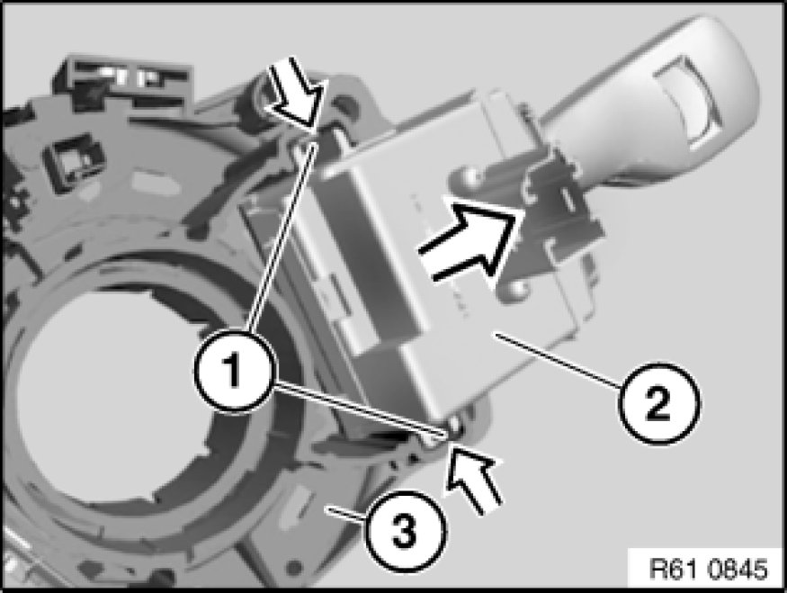

Wiper Switch: Service and Repair
61 31 040 - Removing and installing/replacing switch for windscreen wipers

Necessary preliminary tasks:
- Disconnect battery negative lead Disconnecting and Connecting Battery Negative Lead
- Remove fixture for steering column stalks Removing and Installing/Replacing Fixture for Steering Column Stalk

Press locks (1) and windshield wiper stalk (2) in direction of arrow out of fixture for steering column stalk (3).